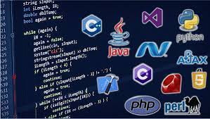

Gracias a la continua evolución del mundo tecnológico, cada día se desarrollan nuevos dispositivos o se actualizan los ya existentes. Para que estos dispositivos funcionen, son necesarias aplicaciones, las cuales necesitan lenguajes de programación para lograr una buena comunicación hombre-máquina.
A continuación, encontrarás cuales son algunos lenguajes de programación más usados en la actualidad.
C++
C++ se caracteriza por ser extremadamente rápido y estable, lo que lo sitúa como uno de los mejores lenguajes de programación y, por tanto, también uno de los más usados. Además, proporciona STL (biblioteca de plantillas estándar), es decir, un conjunto de bibliotecas listas para usar para diferentes estructuras de datos, operaciones aritméticas y algoritmos.
El soporte de estas bibliotecas y la velocidad del lenguaje lo convierten en una opción muy popular entre la comunidad comercial de HFT (High Frecuency Trading).
PYTHON
Python es un lenguaje de programación ampliamente utilizado en las aplicaciones web, el desarrollo de software, la ciencia de datos y el machine learning (ML). Los desarrolladores utilizan Python porque es eficiente y fácil de aprender, además de que se puede ejecutar en muchas plataformas diferentes. El software Python se puede descargar gratis, se integra bien a todos los tipos de sistemas y aumenta la velocidad del desarrollo. Es uno de los lenguajes de programación más usados actualmente y su uso sigue creciendo. Posee unas características muy potentes: es de código abierto, tiene una sintaxis sencilla y es fácil de entender, por lo que ahorra tiempo y recursos.
JAVA
Java es un lenguaje de programación orientado a objetos y una plataforma de software ampliamente utilizado que se ejecuta en miles de millones de dispositivos, que incluyen computadoras portátiles, dispositivos móviles, consolas de juegos, dispositivos médicos y muchos otros. Las reglas y la sintaxis de Java se basan en los lenguajes C y C++. Es un lenguaje de programación ampliamente utilizado para codificar aplicaciones web. Ha sido una opción popular entre los desarrolladores durante más de dos décadas, con millones de aplicaciones Java en uso en la actualidad. Java es un lenguaje multiplataforma. Es un lenguaje de programación rápido, seguro y confiable para codificarlo todo, desde aplicaciones móviles y software empresarial hasta aplicaciones de macrodatos y tecnologías del servidor.
JAVA SCRIPT
JavaScript es un lenguaje de programación que los desarrolladores utilizan para hacer páginas web interactivas. Desde actualizar fuentes de redes sociales a mostrar animaciones y mapas interactivos, las funciones de JavaScript pueden mejorar la experiencia del usuario de un sitio web. Como lenguaje de scripting del lado del servidor, se trata de una de las principales tecnologías de la World Wide Web Idóneo para crear páginas o aplicaciones web, con elementos interactivos o más visuales, de allí su relevancia en el desarrollo de videojuegos. La capacidad de ejecutarse desde el navegador, lo hace el lenguaje más usado en el mundo, pues, aunque un sitio web esté hecho en otro lenguaje, puede contener algo desarrollado en JavaScript.
PHP
PHP es un lenguaje de programación destinado a desarrollar aplicaciones para la web y crear páginas web, favoreciendo la conexión entre los servidores y la interfaz de usuario, puede ser incrustado en HTML. Es de código abierto, no hay restricciones de uso vinculadas a los derechos. El usuario puede usar PHP para programar en cualquier proyecto y comercializarlo sin problemas. Esta en constante perfeccionamiento, gracias a una comunidad de desarrolladores proactiva y comprometida.
 C++
C++ PYTHON
PYTHON JAVA
JAVA JAVA SCRIPT
JAVA SCRIPT PHP
PHP